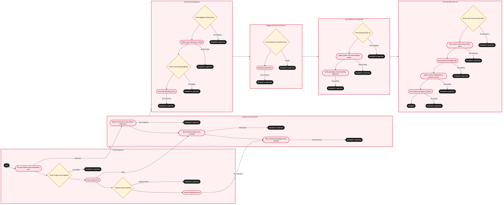

Updated 2026-08-21
Star Alliance Gold Recognition at Airport
Process flow
Click to zoom

Process steps
▼
Phase 1 — Initial Recognition
5 steps
| Step | Activity | Role | System | Input | Output | KPI | Dec | Exc | Pain point |
|---|---|---|---|---|---|---|---|---|---|
| 1.1 | Scan Star Alliance Gold membership card | YYZ Operations Control Duty Manager | Amadeus Altea DCSA | Star Alliance Gold membership card | Passenger details and membership status | Recognition accuracy rate > 98% | N | Y | Amadeus Altea DCS downtime can lead to manual verification delays. |
| 1.2 | Verify lounge access eligibility | Premium, Lounge & VIP Handling Agent | CUPPSC | Passenger details from Amadeus Altea DCS | Lounge access status | Eligibility verification time < 30 seconds | Y | N | Inconsistent data between Amadeus and CUPPS can cause delays. |
| 1.3 | Grant lounge access | Premium, Lounge & VIP Handling Agent | CUPPSC | Lounge access status | Access granted confirmation | Access grant time < 10 seconds | N | Y | System integration issues can cause delays in granting access. |
| 1.4 | Request priority boarding | YYZ Operations Control Duty Manager | Amadeus Altea DCSA | Passenger details and lounge access confirmation | Priority boarding request status | Boarding request time < 60 seconds | Y | N | Manual intervention required during system failures. |
| 1.5 | Confirm boarding priority | YYZ Operations Control Duty Manager | Amadeus Altea DCSA | Priority boarding request status | Boarding priority confirmation | Confirmation time < 30 seconds | N | Y | System delays can cause last-minute disruptions. |
▼
Phase 2 — Lounge Access Verification
3 steps
| Step | Activity | Role | System | Input | Output | KPI | Dec | Exc | Pain point |
|---|---|---|---|---|---|---|---|---|---|
| 2.1 | Manual verification of Star Alliance Gold status | YYZ Operations Control Duty Manager | None (manual process)U | Star Alliance Gold membership card | Passenger details and membership status | Manual verification time > 2 minutes | N | Y | Manual processes are prone to errors. |
| 2.2 | Retry granting lounge access manually | Premium, Lounge & VIP Handling Agent | CUPPSC | Passenger details and lounge access status | Access granted confirmation | Manual retry time > 1 minute | N | Y | Manual retries can cause delays. |
| 2.3 | Retry confirming boarding priority manually | YYZ Operations Control Duty Manager | None (manual process)U | Priority boarding request status | Boarding priority confirmation | Manual retry time > 1 minute | N | Y | Manual retries can cause delays. |
▼
Phase 3 — Priority Boarding Request
4 steps
| Step | Activity | Role | System | Input | Output | KPI | Dec | Exc | Pain point |
|---|---|---|---|---|---|---|---|---|---|
| 3.1 | Check baggage handling status | Baggage Compliance Agent | Baggage Reconciliation SystemC | Passenger details and boarding priority confirmation | Baggage handling status | Baggage check time < 45 seconds | Y | N | System downtime can lead to delayed baggage updates. |
| 3.2 | Update bag-to-passenger tracking | Baggage Compliance Agent | Baggage Reconciliation SystemC | Baggage handling status | Updated tracking information | Tracking update time < 30 seconds | N | Y | Manual updates are error-prone. |
| 3.3 | Verify final boarding eligibility | YYZ Operations Control Duty Manager | Amadeus Altea DCSA | Updated tracking information and boarding priority confirmation | Final boarding eligibility status | Eligibility verification time < 30 seconds | Y | N | System failures can lead to last-minute changes. |
| 3.4 | Grant final boarding priority | YYZ Operations Control Duty Manager | Amadeus Altea DCSA | Final boarding eligibility status | Boarding priority confirmation | Confirmation time < 30 seconds | N | Y | System downtime can cause delays. |
▼
Phase 4 — Baggage Handling Confirmation
2 steps
| Step | Activity | Role | System | Input | Output | KPI | Dec | Exc | Pain point |
|---|---|---|---|---|---|---|---|---|---|
| 4.1 | Final validation of boarding status | YYZ Operations Control Duty Manager | Amadeus Altea DCSA | Boarding priority confirmation | Final boarding validation | Validation time < 10 seconds | Y | N | Manual interventions can cause delays. |
| 4.2 | Boarding confirmation | YYZ Operations Control Duty Manager | Amadeus Altea DCSA | Final boarding validation | Boarding confirmation | Confirmation time < 10 seconds | N | Y | System failures can cause last-minute disruptions. |
▼
Phase 5 — Final Validation and Boarding
3 steps
| Step | Activity | Role | System | Input | Output | KPI | Dec | Exc | Pain point |
|---|---|---|---|---|---|---|---|---|---|
| 5.1 | Post-boarding follow-up | Premium, Lounge & VIP Handling Agent | CUPPSC | Boarding confirmation | Follow-up status | Follow-up time < 5 minutes | Y | N | Manual follow-ups are prone to errors. |
| 5.2 | Update system with post-boarding details | Premium, Lounge & VIP Handling Agent | CUPPSC | Follow-up status | Updated system record | Update time < 30 seconds | N | Y | Manual updates can cause delays. |
| 5.3 | Notify passenger of post-boarding experience | Aeroplan Member Services Agent | None (manual process)U | Updated system record | Passenger notification | Notification time < 1 minute | N | Y | Manual notifications can cause delays. |
▼
Phase 6 — Post-Boarding Follow-up
5 steps
| Step | Activity | Role | System | Input | Output | KPI | Dec | Exc | Pain point |
|---|---|---|---|---|---|---|---|---|---|
| 6.1 | Review and reconcile system data | YYZ Operations Control Duty Manager | Amadeus Altea DCSA | All process steps | Data reconciliation report | Reconciliation time < 1 hour | Y | N | Manual reconciliations can be time-consuming. |
| 6.2 | Final review of Star Alliance Gold status | YYZ Operations Control Duty Manager | Amadeus Altea DCSA | Data reconciliation report | Final status confirmation | Review time < 30 minutes | N | Y | System failures can lead to last-minute changes. |
| 6.3 | Close process and update logs | YYZ Operations Control Duty Manager | Amadeus Altea DCSA | Final status confirmation | Closed process record | Log update time < 10 seconds | N | Y | Manual log updates can cause delays. |
| 6.4 | Notify relevant stakeholders of process outcome | YYZ Operations Control Duty Manager | None (manual process)U | Closed process record | Stakeholder notification | Notification time < 5 minutes | N | Y | Manual notifications can cause delays. |
| 6.5 | Final review and closure of process | YYZ Operations Control Duty Manager | Amadeus Altea DCSA | Stakeholder notification | Process closed | Closure time < 1 minute | N | Y | Manual closures can cause delays. |
Swim lanes
YYZ Operations Control Duty Manager1.1 1.4 1.5 2.1 2.3 3.3 3.4 4.1 4.2 6.1 6.2 6.3 6.4 6.5
Premium, Lounge & VIP Handling Agent1.2 1.3 2.2 5.1 5.2
Baggage Compliance Agent3.1 3.2
Aeroplan Member Services Agent5.3
Systems touched
Amadeus Altea DCSACUPPSCNone (manual process)UBaggage Reconciliation SystemC
Key performance indicators
- Recognition accuracy rate > 98%
- Eligibility verification time < 30 seconds
- Access grant time < 10 seconds
- Boarding request time < 60 seconds
- Confirmation time < 30 seconds
Risks and control points
- Amadeus Altea DCS downtime leading to manual delays
- System integration issues causing data inconsistencies
- Manual processes prone to errors and delays
- IATA Resolution 753 compliance requiring strict tracking
- Last-minute changes due to system failures
Air Canada Process Wiki — process and systems reference compiled from public sources
for IT Application Management and User Support pre-sales discovery.
Built 2026-08-21. Every system carries an evidence tier: tier C is an industry pattern and tier U is an open
question, and neither should be asserted as fact about Air Canada without confirmation in discovery.
Not affiliated with or endorsed by Air Canada. Air Canada, Aeroplan and Altitude are trademarks of Air Canada.